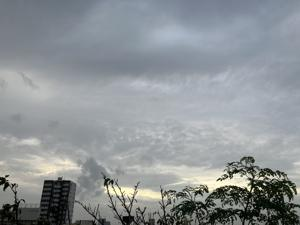

うるがいの話 ある日
最新: 怖い話【うるがいの話 ある日】とは 一日だけのプログです
『うるがいの話』の最新一日だけのプログで、通信料が少なく経済的だ。カニの画像をクリックすると全ての日付が載る『うるがいの話』サイトを表示します
|
|
【うるがいの話】 うるがい(ｳﾙｶﾞｲ urugai)とは、『もずくがに』の名前でとても大きくなります。 |
|---|---|
|
|
【カミマヤーの話】 猫のことを方言でマヤーといいます。カミマヤー（kamimayaa）とは、神の猫のことです。 |
|
【たながぁの音楽】 たながぁ（ﾀﾅｶﾞｰ tanagaa）とは手長えびのことで、何種類かあり大きいのは車 エビぐらいになります。 |

|
【ぶながぁの話】 ぶながぁ(ﾌﾞﾅｶﾞｰ bunagaa)とは、赤い髪の毛、赤い身体、そして身長は１ｍ２０ｃｍ ぐらい、川の蟹を食べているの目撃された。場所は沖縄県国頭郡大宜味村のと ある村僕の隣近所に住んでいる爺さんから、聞いた話です。 |
|
|
【ギーマの話】 ギーマ(giima)とは、山原の里山に咲くスズランに似た、 花を付けます。実は食べられます、 気が付くと口の周りが紫になっています。 |
2024年11月09日 (土）怖い話
16:19

「宇宙の未解明問題」 （リチャード・ハモンド著、大貫昌子訳）より
第９章 宇宙の起源
宇宙についてわれわれが犯す間違いは、宇宙のはじまりには限りなく広
がる真黒な空っぽの空間があって、そこに突然ビッグバンの大爆発が起
きたと想像することだ。なぜこれが大間違いなのかというと、ビッグバ
ンの前には空間は存在せず、しかもビッグバン以前には時間もなかった
からだ。つまりビッグバンの前には、まったく何もなかったのである。
どうだろうか、これを理解しようとすると怖くなってくる。色即是空（
しきそくぜくう）の世界なのだが。
訳者あとがきで、『読みやすいのですらすらわかったつもりになってい
ると・』。フムフム、わかったつもりにもなれない！、物理に自信があ
ったのだが､しょせん古典力学どまりの知識では理解できない本である。
本（日本２０１０年第１印刷）の記述されている未解明問題だが、
ビックス粒子観測されていないとあるが、ヒッグス粒子はようやく発見
され（２０１２年、翌年ノーベル賞）
重力波もまだ、観測されないと書いてあったが２０１５年９月１４日（
２０１７年ノーベル賞）に観測された。
今朝は、警報級の大雨である、法事が昨日でよかった。子供が、バーチ
ャンが亡くなった時間、スマホの画像が突然ピンクになった、そして部
屋になぜか黒いモヤが見えたと怖い話をしていた。バーチャンは大安に
亡くなって大安に葬式をしたのでよかったゼとわけのわからないことを
言った。
本日のバタフライピーの花、１９収穫。
１６時１３分 ビットコインの総資産 ￥３３、８６３（↑２７４）